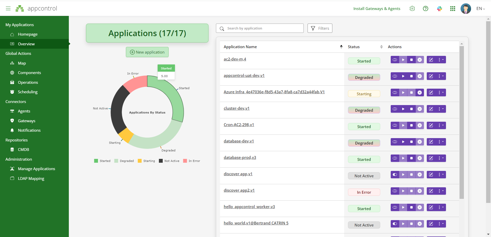
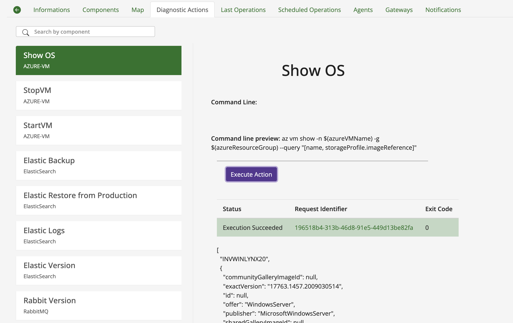
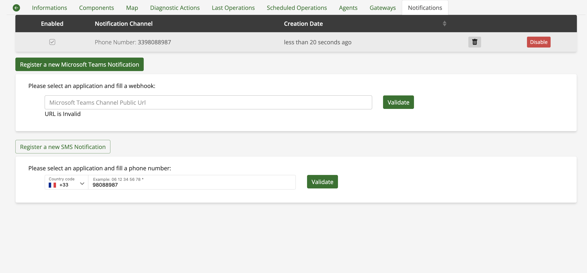
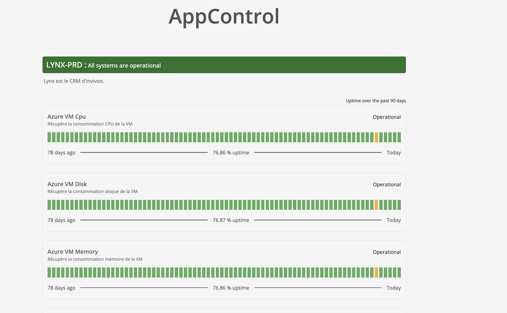

Main Features of AppControl
AppControl offers a variety of features that help you monitor and manage critical business applications efficiently. Below is a list of the key features available in AppControl.
1. Application Dashboard
Monitor the status of your applications in real time.
- Main Statuses:
- Started: Application is running as expected.
- Stopped: Application is not currently running.
- Degraded: Application is running but has performance or availability issues.
- Error: Application has encountered an error and needs attention.

2. Application Operations History
Track all changes and events related to your applications over time.
- Logs: Detailed logs of when applications were started, stopped, or when any issues occurred.
- Audit trail: A comprehensive view of all actions taken within the system.

3. Action Buttons: Start/Stop
Easily control the lifecycle of your applications.
- Start: Quickly start any application.
- Stop: Gracefully shut down applications.

- Activate/Deactivate applications
- Start aplication
- Stop application
- Cancel current operation (Start/Stop)
- Force check actions
- Edit current application
- Display filters
- Advanced settings
- Show/Hide groups (groups are used to group components)
4. Custom Actions (On-Demand Actions)
Define and execute custom actions tailored to your application’s needs.
- Examples:
- Diagnostics checks
- Cleanup tasks
- Restart specific components

5. Notifications
Stay informed of application statuses and incidents with integrated notification systems.
- Notification channels:
- SMS alerts for critical events.
- Microsoft Teams notifications to keep your team updated in real time.

6. Status Page
The Status Page in AppControl provides a detailed overview of the availability and health of your critical applications. This page displays the percentage of availability for each application, allowing you to monitor uptime and quickly identify potential issues over the past few days.
Key Features:
- Application Availability: Shows the percentage of time each application was available and running smoothly, helping you assess the stability and reliability of your applications.
- Historical Data: Analyze the performance of applications over a specific period (e.g., the last 7 or 30 days) to gain insights into trends or recurring issues.
- Color-Coded Indicators:
- Green: High availability (e.g., > 75%)
- Yellow: Moderate availability (e.g., 50-75%)
- Red: Low availability or critical issues (e.g., < 50%)
- Interactive Graphs: Visual representations of uptime fluctuations, making it easy to visualize downtime and availability trends.
This page helps ensure that your applications maintain high levels of availability and reliability by providing a clear and actionable view of their performance over time.

6. Integration with Legacy and Cloud Applications
Seamlessly monitor both legacy on-premise applications and cloud-native services without requiring any modifications to existing applications.
7. Automated Recovery
While automated recovery avoids restarting components by default, you can schedule auto restarts using built-in cron expressions to meet your operational needs.